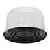
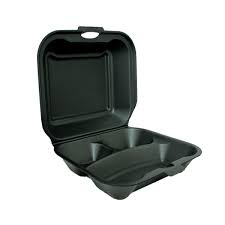
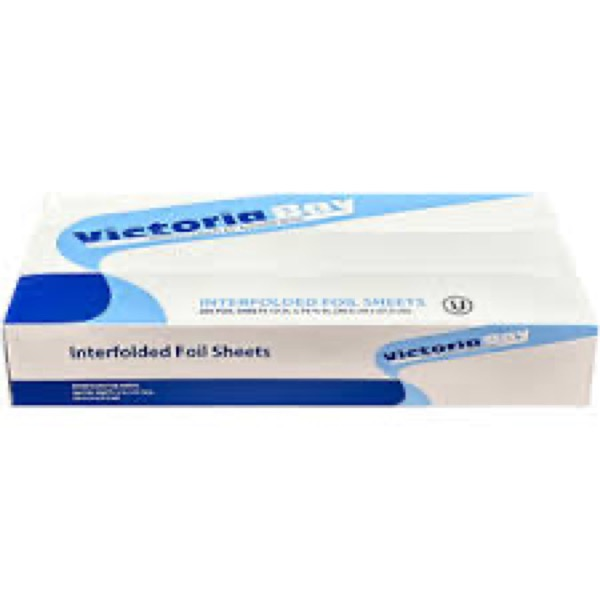

We track every SKU swap and every delivery. Here's what actually happened when Jacksonville-area restaurants switched to SDC.
Maria Delgado runs a 48-seat Mexican kitchen in Jax Beach with a 60%-takeout business. Fragmented supply across three vendors was bleeding margin. SDC consolidated her to 11 SKUs, cut her bill 22%, and caught a sizing mismatch that had been wasting ~400 soup cups a week.

Maria inherited a fragmented supply list when she took over the lease in 2024. Three distributors, overlapping SKUs, and worst of all — a 16oz soup cup from one vendor that technically fit a lid from another, but leaked at the seal. She was losing ~400 lids a week to the tape trick the line staff used to patch it, and none of her vendors cared enough to fix it.
On top of that, she was spending about 3 hours a week reconciling invoices across vendors, dealing with three different minimums, and chasing down back-ordered items with zero visibility into lead times. It was working, barely — but not scaling.
We audited her supply list in one 45-minute walkthrough. Consolidated 34 SKUs to 11, all on one weekly delivery. Replaced the mismatched cup/lid with SDC-CUP-16K + SDC-LID-16F, which seal at the rim. Added 2 weeks of safety stock on the fast-movers, held at our Atlantic Beach warehouse — so she can call at 9am and have it by 3pm.
Jose walked the kitchen, watched service for 20 minutes, and caught two more SKU redundancies she hadn't noticed herself. Same materials, different branded SKUs from different vendors — identical product, double the SKU overhead.
One delivery a week instead of three. A 22% cut to her packaging line-item. 400 cups a week that used to be taped-shut now ship clean. Maria moved her full takeout program onto SDC and referred three other Jax Beach restaurants in her first quarter — including Riverside Ramen, who saved 18% on their eco-container switch.
"Jose walked in, looked at my supply closet for 10 minutes, and fixed a problem I'd been living with for two years. I didn't even know it was fixable." — Maria Delgado, La Cocina de Maria
Ricardo Vega runs a food truck out of Jacksonville's Westside. He needed a supplier who'd sell him one case at a time and speak Spanish on the phone. SDC set him up on weekly WhatsApp reorders — no portal, no minimums, no language barrier. Ricardo now orders 100% through Jose's direct line.

David Chen, GM at Riverside Ramen House, wanted to switch from foam to compostable containers but worried about cost and disruption. SDC sampled four SKUs, handled the vendor changeover in one delivery cycle, and found a PLA deli container that came in 18% cheaper per case than the foam alternative — with better branding appeal to their guests.

When this independent grocery expanded its deli counter into prepared meals, they needed to spin up a full packaging program fast — containers, lids, labels, bags, and napkins — all at once. SDC had everything in stock at Atlantic Beach. Delivered Tuesday, service launched Thursday. Zero waiting on back-ordered items from a national distributor.